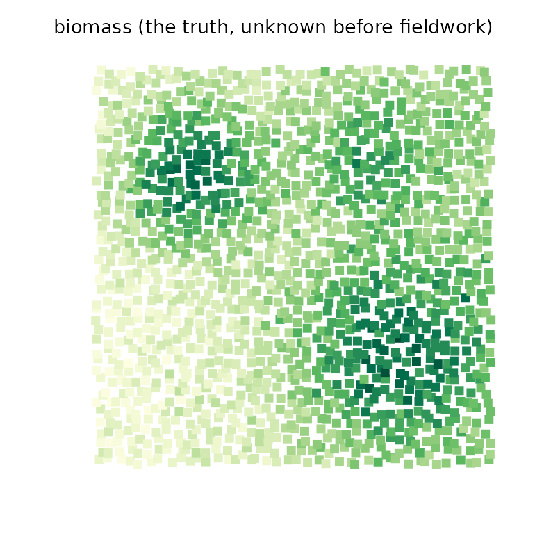
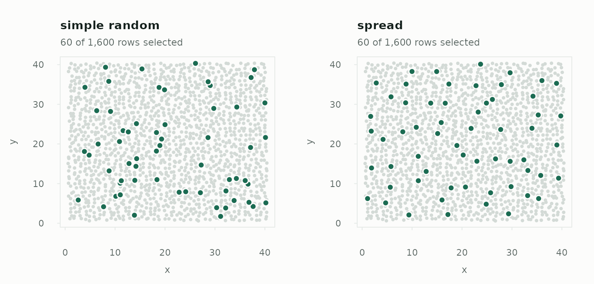

Walkthrough: a spatially balanced field survey
Source:vignettes/articles/spatial-sampling.Rmd
spatial-sampling.RmdA forestry team needs total above-ground biomass for a 1,600-cell landscape and can visit 60 plots. Biomass varies smoothly — it follows slope, soil and stand history — so plots close together tend to agree. That single fact decides the design: a sample that covers the landscape evenly learns far more per plot than one that happens to bunch up.
The landscape
Each cell has map coordinates, a forest type, and a satellite canopy-cover index known everywhere before fieldwork. Biomass is only measured on the plots visited; the frame holds it here so the answers can be checked.
set.seed(8)
grid <- expand.grid(x = 1:40, y = 1:40)
grid$x <- grid$x + runif(nrow(grid), -0.4, 0.4)
grid$y <- grid$y + runif(nrow(grid), -0.4, 0.4)
bump <- function(cx, cy, h, w) h * exp(-((grid$x - cx)^2 + (grid$y - cy)^2) / w)
grid$biomass <- 80 + 1.5 * grid$x + bump(10, 30, 120, 60) +
bump(30, 12, 90, 90) + bump(28, 32, 60, 40) + rnorm(nrow(grid), 0, 12)
grid$canopy <- pmin(1, pmax(0.05, grid$biomass / 300 + rnorm(nrow(grid), 0, 0.08)))
grid$type <- ifelse(grid$x + grid$y > 45, "conifer", "broadleaf")
c(cells = nrow(grid), total_biomass = round(sum(grid$biomass)))
#> cells total_biomass
#> 1600 228500
pal <- hcl.colors(30, "YlGn", rev = TRUE)
op <- par(mar = c(2, 2, 2, 1))
plot(grid$x, grid$y, pch = 15, cex = 0.9, asp = 1, axes = FALSE, ann = FALSE,
col = pal[cut(grid$biomass, 30)])
title("biomass (the truth, unknown before fieldwork)", cex.main = 0.85,
adj = 0, font.main = 1)
par(op)
Simple random versus spread
design_spread() draws by the local pivotal method
(Grafström, Lundström and Schelin 2012). Every cell keeps the same
inclusion probability, 60 / 1,600, but a selected cell makes its
neighbours less likely to be selected too, so the sample covers the
map.
srs <- design_simple(n = 60)
spread <- design_spread(c("x", "y"), n = 60, scale = FALSE)
op <- par(mfrow = c(1, 2))
plot(srs, grid, type = "map", coords = c("x", "y"), seed = 4,
main = "simple random")
plot(spread, grid, type = "map", seed = 4, main = "spread")
par(op)
scale = FALSE because both coordinates are in the same
unit; standardising them would change what “near” means.
What spreading is worth
Draw each design many times and look at the spread of the estimated totals:
sd_of <- function(design, R = 100) {
sd(vapply(seq_len(R), function(i) {
ht_total(draw(grid, design, seed = i, weights = TRUE), "biomass",
variance = "none")$total
}, numeric(1)))
}
designs <- list(
simple = srs,
spread = spread,
spread_canopy = design_spread(c("x", "y", "canopy"), n = 60),
pps_canopy = design_weighted("canopy", n = 60, method = "systematic"),
spread_pps = design_spread(c("x", "y"), n = 60, size = "canopy",
scale = FALSE)
)
sds <- vapply(designs, sd_of, numeric(1))
round(sds)
#> simple spread spread_canopy pps_canopy spread_pps
#> 7124 3403 3273 5392 5417
round((sds / sds[["simple"]])^2, 2) # variance relative to simple random
#> simple spread spread_canopy pps_canopy spread_pps
#> 1.00 0.23 0.21 0.57 0.58Spreading over the map alone brings the variance down to 23% of simple random sampling’s, for the same 60 plots. The other rows show two ways of also using the satellite index, which is known everywhere:
-
spread across coordinates and canopy balances the
sample on canopy cover as well as position — a stratification on both,
without drawing a single boundary. With several columns
scale = TRUE(the default) puts them on an equal footing. -
probability proportional to canopy, alone or
combined with spreading, bets that canopy predicts biomass and visits
dense stands more often. It beats simple random sampling, but here it
does less than spreading alone: varying the probabilities adds weight
variation, and biomass is not close enough to proportional to canopy to
repay it.
deff()from a pilot tells you which way that goes on your own landscape.
One survey, start to finish
Take the spread design and draw the 60 plots the crew will visit:
plots <- draw(grid, spread, seed = 3, weights = TRUE)
nrow(plots)
#> [1] 60
sample_summary(plots)
#> Sample of 60 from 1,600 (spread design)
#> sampling fraction 0.0375
#> design weights 26.67 to 26.67 (cv 0)After fieldwork, the total, and a mean per hectare-cell:
ht_total(plots, "biomass")
#> Horvitz-Thompson total (spread design, n = 60)
#> estimate 226,652.7
#> se 3,326.188 (local-mean approximation)
#> 95% CI 219,997 to 233,308.4 (t, 59 df)
#> deff 0.256 (better than simple random sampling)
#>
#> Local mean approximation for a spatially balanced sample: the local
#> pivotal method has no closed-form joint inclusion probabilities.
c(truth = sum(grid$biomass))
#> truth
#> 228499.5The variance is the local mean estimator: each plot is compared with its three nearest sampled neighbours, which is how a spatially balanced sample has to be judged. A simple-random formula would give most of the gain back. (The seed here was chosen to show a typical sample; the next section checks how often the interval misses.)
Totals by forest type come from the same 60 plots:
ht_total(plots, "biomass", by = "type")
#> Horvitz-Thompson total by domain (spread design, 95% CI, t, 59 df)
#> type n total se ci_lower ci_upper method
#> broadleaf 36 131008 7194 116614 145403 local mean
#> conifer 24 95644 6683 82273 109016 local mean
#>
#> Local mean approximation for a spatially balanced sample: the local
#> pivotal method has no closed-form joint inclusion probabilities.
tapply(grid$biomass, grid$type, sum)
#> broadleaf conifer
#> 128082.5 100417.1Checking the interval
The local mean estimator is an approximation, documented as erring on the conservative side. It is worth confirming on your own kind of landscape before relying on it — here, 150 repeated surveys:
truth <- sum(grid$biomass)
out <- vapply(1:150, function(i) {
r <- ht_total(draw(grid, spread, seed = 500 + i, weights = TRUE), "biomass")
c(r$total, r$variance, r$ci[1] <= truth && truth <= r$ci[2])
}, numeric(3))
c(variance_ratio = mean(out[2, ]) / var(out[1, ]), coverage = mean(out[3, ]))
#> variance_ratio coverage
#> 1.2901581 0.9733333A variance ratio above 1 means the reported standard errors are, on average, a little larger than the real ones; the interval covers at least as often as it claims.
Restricting to a region
Often only part of the landscape is in scope — one management unit, one catchment. There are two ways to handle it, and they are not the same:
-
design_spatial()takes ansfpolygon and draws a simple random sample of the cells inside it. It decides where sampling happens, not how evenly. - Filtering the frame to the region and then spreading gives an even sample of the region, and keeps the spreading gain.
unit <- sf::st_sfc(sf::st_polygon(list(cbind(c(5, 25, 25, 5, 5),
c(15, 15, 38, 38, 15)))))
unit <- sf::st_set_crs(unit, 3857) # a planar CRS: coordinates in metres
in_unit <- design_spatial(c("x", "y"), region = unit, n = 30, crs = 3857)
sum(inclusion_prob(grid, in_unit) > 0) # cells the design can reach
#> [1] 456
# The spread alternative: restrict the frame, then spread within it
unit_frame <- grid[inclusion_prob(grid, in_unit) > 0, ]
spread_unit <- design_spread(c("x", "y"), n = 30, scale = FALSE)
sd_total <- function(frame, design) sd(vapply(1:100, function(i) {
ht_total(draw(frame, design, seed = i, weights = TRUE), "biomass",
variance = "none")$total
}, numeric(1)))
round(c(simple_in_region = sd_total(grid, in_unit),
spread_in_region = sd_total(unit_frame, spread_unit)))
#> simple_in_region spread_in_region
#> 2397 1420Both estimate the total for the unit — design_spatial()
gives every cell outside it probability zero, so its Horvitz-Thompson
total covers the inside only — and the spread version does it with a
smaller error.
Where other tools fit
drawn’s spread design is the local pivotal method with a
local-mean variance, integrated with the same draw–estimate–hand-off
workflow as every other design. For more specialised spatial work:
-
spsurveyimplements the generalized random tessellation stratified (GRTS) design (Stevens and Olsen- and a full analysis workflow for environmental monitoring, including designs over lines and areas.
-
BalancedSamplingimplements the pivotal and cube families in compiled code, including the local cube method, which balances on auxiliary totals exactly as well as spreading, and scales to much larger frames.
References
Grafström, A., Lundström, N. L. P. and Schelin, L. (2012). Spatially balanced sampling through the pivotal method. Biometrics, 68, 514–520.
Grafström, A. and Schelin, L. (2014). How to select representative samples. Scandinavian Journal of Statistics, 41, 277–290.
Stevens, D. L. and Olsen, A. R. (2003). Variance estimation for spatially balanced samples of environmental resources. Environmetrics, 14, 593–610.
Stevens, D. L. and Olsen, A. R. (2004). Spatially balanced sampling of natural resources. Journal of the American Statistical Association, 99, 262–278.